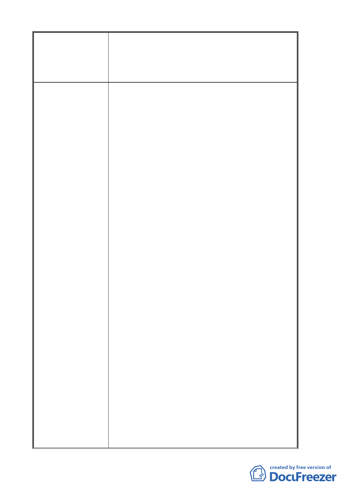

陳 情 理 由 書面質詢：『1、政治大學申請變更指南山莊機關用地計畫
案，挑肥撿瘦，佔盡好處。2、政治大學異想天開濫拆民
宅、增闢道路，引起居民恐慌。3、政治大學主導之「木
柵二期重劃區與政治大學周邊地區整體規劃與改善計畫
案」，既不中立又不透明。』
建 議 辦 法 質詢題目：
1、政治大學申請變更指南山莊機關用地計畫案，挑肥撿
瘦，佔盡好處。
2、政治大學異想天開濫拆民宅、增闢道路，引起居民恐
慌。
3、政治大學主導之「木柵二期重劃區與政治大學周邊地
區整體規劃與改善計畫案」，既不中立又不透明。
說 明：
一、政治大學申請變更文山區指南山莊機關用地為大專
用地及保護區計畫案，挑肥撿瘦，損害指南山莊私地
地主權益。
位在文山區的指南山莊從 58 年納入機關用地，
至今已 40 多年，因屬國防部軍備局用地，當時機關
用地範圍內，部分未被徵收的土地地主長期來因軍
事用地不能加以利用，如今政治大學欲將指南山莊
機關用地變更為大專用地，竟挑肥撿瘦，將未徵收
私地部份，坡度較高，且無利用價值的地方，規劃
為保護區，共 2.43 公頃，排除在大專用地之外，如
此一來，政大就可以免於花錢徵收，還要讓淪為「保
護區」的地主永遠不能開發利用。
本席認為，指南山莊私有地的地主從 58 年被納
入軍事區域土地至今，被欺負了 40 幾年，直到 98
年 7 月 30 日政大申請變更指南山莊機關用地為大學
用地後，還編列了 5.6 億土地徵購費，只是徵購的
都是坡度較低，或得以整體運用的肥地，至於遭受
變更為保護區土地的地主本以為多年的委屈可以獲
得平反，但沒想到政大欲將其地排除徵收，規劃為
保護區，如此，不但沒有徵購費，日後列為保護區
更不可能加以利用，成為在這片土地邊兒，名符其
實的「保護」區，豈不欺人太甚！
坡度平坦，利用價值高的就納為政大自身的大
學用地，共 8.61 公頃，發展成為政大教學空間，大
肆興建學生宿舍，及蓋圖書館與資訊中心。
二、政治大學異想天開，竟在計畫案中提出交通改善構
想，想另闢道路，大肆拆除民房，枉顧當地居民權益。
根據台北市政府在 99 年 1 月 6 日公開展覽的「變
更臺北市文山區指南山莊機關用地為大專用地(國
- 13 -